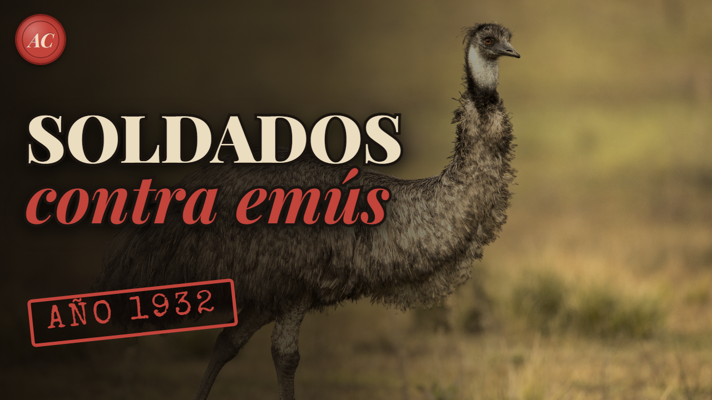

La GUERRA DEL EMÚ: cuando el ejército australiano se enfrentó a 20.000 aves (1932)

El vídeo de este expediente ya está en TikTok y muy pronto llegará a YouTube.
El caso
En 1932 el ejército australiano envió soldados con ametralladoras contra miles de emús que arrasaban los campos de trigo. La operación fracasó.
En noviembre de 1932, el ejército australiano envió a un mayor, dos artilleros, dos ametralladoras y 10.000 balas a los campos de trigo de Australia Occidental. El enemigo eran los emús, miles de ellos, que estaban arrasando las cosechas de unos granjeros que ya lo estaban pasando muy mal. Un mes después, la operación se dio por terminada con un balance tan pobre que la prensa, los políticos y hasta un ornitólogo se burlaron de ella.
La llamada «guerra del emú» se cuenta hoy casi como un chiste de internet, el día en que unas aves derrotaron a un ejército. La historia real es menos épica y más interesante: habla de veteranos de guerra abandonados a su suerte, de un gobierno que necesitaba parecer útil y de un problema agrícola que no se resolvió a tiros, sino con dinero y vallas.
Soldados convertidos en granjeros
Tras la Primera Guerra Mundial, Australia repartió tierras entre sus excombatientes para que se ganaran la vida como agricultores. Según Scientific American, el programa dio tierras a unos 5.030 antiguos soldados para cultivar trigo o criar ovejas. En Australia Occidental fueron a menudo terrenos marginales, poco fértiles, en lo que hoy se conoce como el Wheatbelt, el cinturón triguero que rodea Perth por el norte, el este y el sur.
Desde 1929, en plena Gran Depresión, el gobierno animó a esos granjeros a sembrar más trigo y les prometió subvenciones. Las ayudas no llegaron y el precio del trigo siguió cayendo. En octubre de 1932, cuando se preparaban para la cosecha, los agricultores amenazaban ya con no entregar el grano. Fue entonces cuando apareció el último problema que les faltaba.
Veinte mil emús en los trigales
El emú es una de las aves más grandes del mundo, solo superada en altura por los avestruces. Puede medir cerca de 1,9 metros, no vuela, pero corre a unos 48 kilómetros por hora. En Australia Occidental, sus poblaciones se desplazan según las estaciones en busca de agua y comida.
En 1932, tras la época de cría, unos 20.000 emús, según las estimaciones de la época, llegaron a las tierras de cultivo. Los atraían los campos desbrozados y los nuevos puntos de agua que habían creado los propios granjeros. Se concentraron en la zona de Campion, Chandler y Walgoolan, a medio camino entre Perth y Kalgoorlie. Pisoteaban y se comían el trigo, y además abrían agujeros en las vallas, por donde luego entraban los conejos, otra plaga temida.
Ametralladoras contra aves
Una delegación de granjeros excombatientes fue a ver al ministro de Defensa, sir George Pearce, con una petición muy concreta: ametralladoras. Pearce aceptó con condiciones. Las armas las manejarían militares, el gobierno de Australia Occidental pagaría el transporte, y los granjeros darían comida y alojamiento a la tropa y pagarían la munición. Se dice que el ministro lo vio como una buena práctica de tiro, y algunos historiadores creen que al gobierno también le interesaba mostrarse cercano a unos veteranos descontentos, en una región donde crecía el movimiento independentista. Incluso se llevó a un cámara de Fox Movietone para filmarlo.
Al mando iba el mayor Gwynydd Purves Wynne-Aubrey Meredith, de la Artillería Real Australiana, con el sargento S. McMurray y el artillero J. O'Halloran, dos ametralladoras Lewis y 10.000 cartuchos. La lluvia retrasó el inicio hasta el 2 de noviembre. Ese día avistaron unos 50 emús fuera de alcance; las aves se dividieron en grupos pequeños y, al final de la jornada, habían abatido quizá una docena.
El 4 de noviembre, Meredith preparó una emboscada junto a un depósito de agua. Se acercaron más de 1.000 emús, abrieron fuego... y la ametralladora se atascó después de matar a 12. El resto huyó. Probaron también a montar un arma en un camión, pero el vehículo no podía seguir el ritmo de los emús y el traqueteo por el terreno irregular hacía imposible apuntar. Hacia el 8 de noviembre se habían disparado unos 2.500 cartuchos, y las estimaciones de aves muertas iban de 50 a 500; la más alta, la de los colonos. Tras las críticas de la prensa local y un debate en la Cámara de Representantes, Pearce ordenó retirar a los soldados ese mismo día.
Segundo asalto: diez balas por emú
La retirada duró poco. La sequía y el calor empujaron todavía más aves hacia las granjas, el primer ministro de Australia Occidental, James Mitchell, respaldó una nueva intervención y el 13 de noviembre Meredith volvió al campo. Los dos primeros días cayeron unos 40 emús; a principios de diciembre, los soldados abatían alrededor de 100 por semana. El 10 de diciembre, el mayor fue llamado de vuelta.
Su informe habló de 986 emús abatidos con 9.860 cartuchos, exactamente 10 por ave, y de otros 2.500 heridos que habrían muerto después. Meredith terminó admirando a su rival: «Pueden enfrentarse a las ametralladoras con la invulnerabilidad de los tanques», dijo, y añadió que una división con la capacidad de estas aves para encajar balas podría plantar cara a cualquier ejército del mundo. El ornitólogo Dominic Serventy fue más irónico: escribió que los sueños de los artilleros de disparar a quemarropa contra masas compactas de emús se desvanecieron pronto, porque el «mando» de las aves había optado por tácticas de guerrilla y su ejército se dispersó en pequeñas unidades.
La política tampoco tuvo piedad. Pearce se ganó el apodo de «ministro de la Guerra del Emú», y el diputado laborista A. E. Green bromeó con que, si había que repartir medallas, deberían ir para los emús.
Lo que de verdad funcionó
Los granjeros volvieron a pedir ayuda militar en 1934, 1943 y 1948, y el gobierno se negó cada vez. La solución llegó por otros caminos. Los emús habían estado protegidos hasta 1922, cuando se reclasificaron como plaga, y desde 1923 existía un sistema de recompensas que pagaba a los cazadores por cada emú, y resultó mucho más eficaz: en solo 6 meses de 1934 se reclamaron 57.034 recompensas. Según Australian Geographic, entre 1945 y 1960 se mataron así unos 284.700 emús en el estado. A ello se sumaron las vallas de exclusión contra plagas, cada vez más populares desde 1930, y, en 1950, la cesión a los granjeros de 500.000 cartuchos del calibre .303.
Hoy el emú está protegido por la ley federal australiana, figura en el escudo nacional junto al canguro rojo y la Unión Internacional para la Conservación de la Naturaleza lo clasifica como especie de preocupación menor. Algunas poblaciones locales, eso sí, están amenazadas.
Qué es mito y qué no
Lo primero: Australia no «perdió una guerra». No hubo declaración de guerra, ni frente, ni rendición, y nadie del ejército resultó herido. Fue una operación de control de plagas con medios militares que fracasó y se convirtió en motivo de burla. Hasta hubo quien defendió lo contrario: en 1935, el periódico Coolgardie Miner aseguró que las ametralladoras habían resultado eficaces y salvado lo que quedaba del trigo.
Las cifras deben leerse con cautela. Los 20.000 emús son una estimación de la época, no un recuento. Los 986 abatidos son los que declaró el propio Meredith, con una cuenta sospechosamente redonda de 10 balas por ave, y el historiador Greg Beyer los considera muy discutidos y probablemente inflados. Los 2.500 heridos que habrían muerto más tarde son todavía más difíciles de comprobar.
Tampoco está del todo claro por qué se montó la operación. La versión oficial era ayudar a los granjeros. El historiador Murray Johnson ha sugerido que fue en parte un ejercicio de propaganda, para que el gobierno pareciera hacer algo por unos veteranos en apuros, y otros autores apuntan al deseo de calmar a una región molesta con el gobierno federal. Son interpretaciones razonables, pero no pueden darse por demostradas. Lo indiscutible es el desenlace: las aves siguieron ahí, y el problema se gestionó durante décadas con recompensas y vallas, no con ametralladoras.
Curiosidades del expediente
- Según algunas estimaciones, unos 20.000 emús llegaron a las granjas.
- El mayor Meredith llegó con dos soldados, dos ametralladoras Lewis y 10.000 balas.
- En una emboscada la ametralladora se atascó tras abatir solo a unas pocas aves.
- Su informe habló de 986 emús abatidos con 9.860 balas, unas cifras discutidas.
- A partir de 1934, las recompensas a los cazadores funcionaron mucho mejor.